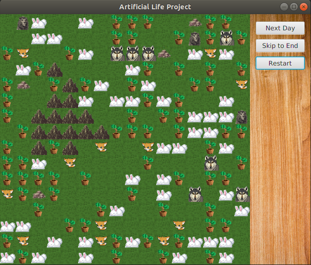

Artificial Life
Based off of Conway's Game of Life, The goal of this project is to create simple rules which each individual organism follows in an attempt to
create more interesting emerging patterns. This was a group project. My work includs the logic for the grid and the graphics. The organism logic
and terrain generation are courtesy of my collaborators.
Github: V-Grigoryan
Github: rick42
Technology
- Java
- JavaFX
Demo
Initial state
The grid is randomly set based on randomly generating a terrain of mountain ranges and rocks. The terrain is then randomly filled with different ratios of organisms
After a full run
After the program is run for some time, it will reach a steady state where the entire ecosystem dies. At this point some statistics about the run are printed in the console